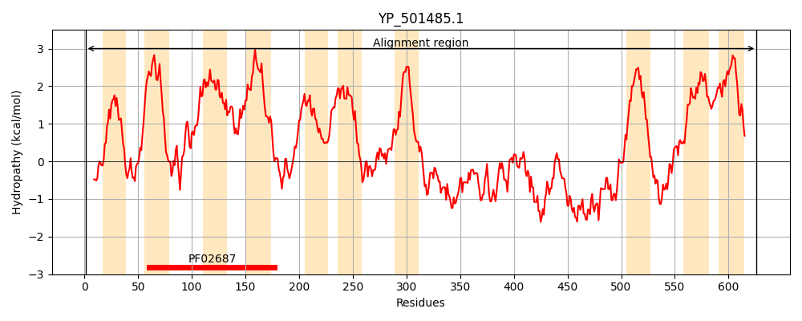
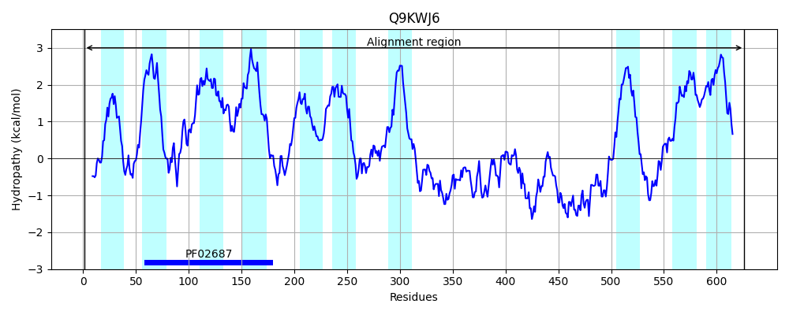
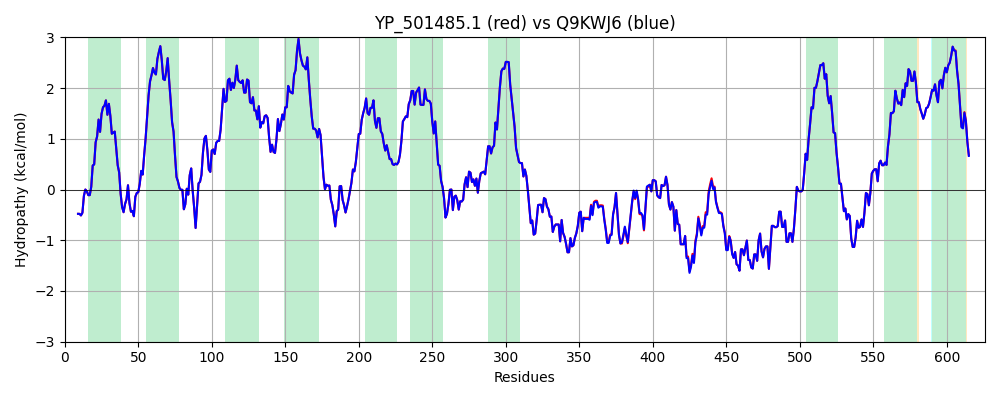

Hit Accession: Q9KWJ6
Hit TCID: 3.A.1.134.11
Hit Description: gnl|BL_ORD_ID|18405 gnl|TC-DB|Q9KWJ6|3.A.1.134.11 ABC transporter OS=Staphylococcus aureus GN=vraE PE=4 SV=1
Mach Len: 626
e:0.000000
Query TMS Count : 10
Hit TMS Count: 10
TMS-Overlap Score: 11.800000
Predicted Substrates:CHEBI:29570;daptomycin, CHEBI:2970;bacitracin, CHEBI:135075;alphaprodine
BLAST Alignment:
Score: 3064 , Bit scores: 1184 bits, E-value: 0.0e+00, Alignment length: 626, Percentage identity: 99
Query: 1 MTFNHIVFKNLRQNLKHYAMYLFSLFFSIVLYFSFTTLQFTKGVNNDDSMAIIKKGALVGSIFLFIIIVIFLMYANHLFVKRRTREFALFQLIGLTRQNILKMLALEQMIVFLITGVVGVLCGIAGAQLLLSIVSKLMSLSINLSIHFEPMALVLTIFMLIIAYVLILFQSALFLKRRSILSMMKDSIKTDATTAKVTTAEVISGVLGIAMIALGYYMATEMFGTFKALTMAMTSPFIILFLTVVGAYLFFRSSVSLIFKTLKKSKNGRVSITDVVFTSSIMYRMKKNAMSLTIIAIISAVTVTVLCFAALSKSNTDQTLTSMAPNEFNVVATQDAKQFETKLSQQQITFSKNAYETITVDNVNDQVITLENGSDSGRTNSILSANNKLTGNNAIITNTKSLPNIINIHLNKDLVVKGTKNETFRVTQEDKGKVYPLNLSFNSPVIEVSPEKYQQLKTQNNVHTFYGYDIKQTSQKEKAQAIAKQFGDKVITYDEMKKEVDATNGILIFVTSFLGLAFLVAAGCIIYIKQMDETEDELSNFRILKRIGFTHTDMLKGLLLKITFNFGLPLLIAILHAVFAAIAFMKLMGNISFMPVIVVIVVYTLIYITFALIAFIHSNKLIKKTI 626
MTFNHIVFKNLRQNLKHYAMYLFSLFFSIVLYFSFTTLQFTKGVNNDDSMAIIKKGALVGSIFLFIIIVIFLMYANHLFVKRRTREFALFQLIGLTRQNILKMLALEQMIVFLITGVVGVLCGIAGAQLLLSIVSKLMSLSINLSIHFEPMALVLTIFMLIIAYVLILFQSALFLKRRSILSMMKDSIKTDATTAKVTTAEVISGVLGIAMIALGYYMATEMFGTFKALTMAMTSPFIILFLTVVGAYLFFRSSVSLIFKTLKKSKNGRVSITDVVFTSSIMYRMKKNAMSLTIIAIISAVTVTVLCFAALSKSNTDQTLTSMAPNEFNVVATQDAKQFETKLSQQQITFSKNAYETITVDNV DQVITLENGSDSGRTNSILSANNK+TGNNAIITNTKSLPNIINIHLNKDLVVKGTKNETFRVTQEDKG+VYPLNLSFNSPV+EVSPEKYQQLKTQNNVHTFYGYDIKQTSQKEKAQAIAKQFGDKVITYDEMKKEVDATNGILIFVTSFLGLAFLVAAGCIIYIKQMDETEDELSNFRILKRIGFTHTDMLKGLLLKITFNFGLPLLIAILHAVFAAIAFMKLMGNISFMPVIVVIVVYTLIYITFALIAF+HSNKLIKKTI
Sbjct: 1 MTFNHIVFKNLRQNLKHYAMYLFSLFFSIVLYFSFTTLQFTKGVNNDDSMAIIKKGALVGSIFLFIIIVIFLMYANHLFVKRRTREFALFQLIGLTRQNILKMLALEQMIVFLITGVVGVLCGIAGAQLLLSIVSKLMSLSINLSIHFEPMALVLTIFMLIIAYVLILFQSALFLKRRSILSMMKDSIKTDATTAKVTTAEVISGVLGIAMIALGYYMATEMFGTFKALTMAMTSPFIILFLTVVGAYLFFRSSVSLIFKTLKKSKNGRVSITDVVFTSSIMYRMKKNAMSLTIIAIISAVTVTVLCFAALSKSNTDQTLTSMAPNEFNVVATQDAKQFETKLSQQQITFSKNAYETITVDNVKDQVITLENGSDSGRTNSILSANNKVTGNNAIITNTKSLPNIINIHLNKDLVVKGTKNETFRVTQEDKGRVYPLNLSFNSPVVEVSPEKYQQLKTQNNVHTFYGYDIKQTSQKEKAQAIAKQFGDKVITYDEMKKEVDATNGILIFVTSFLGLAFLVAAGCIIYIKQMDETEDELSNFRILKRIGFTHTDMLKGLLLKITFNFGLPLLIAILHAVFAAIAFMKLMGNISFMPVIVVIVVYTLIYITFALIAFVHSNKLIKKTI 626 | Protein Hydropathy Plots: |
|---|
|  |  |
Pairwise Alignment-Hydropathy Plot:
|
|---|
|  |